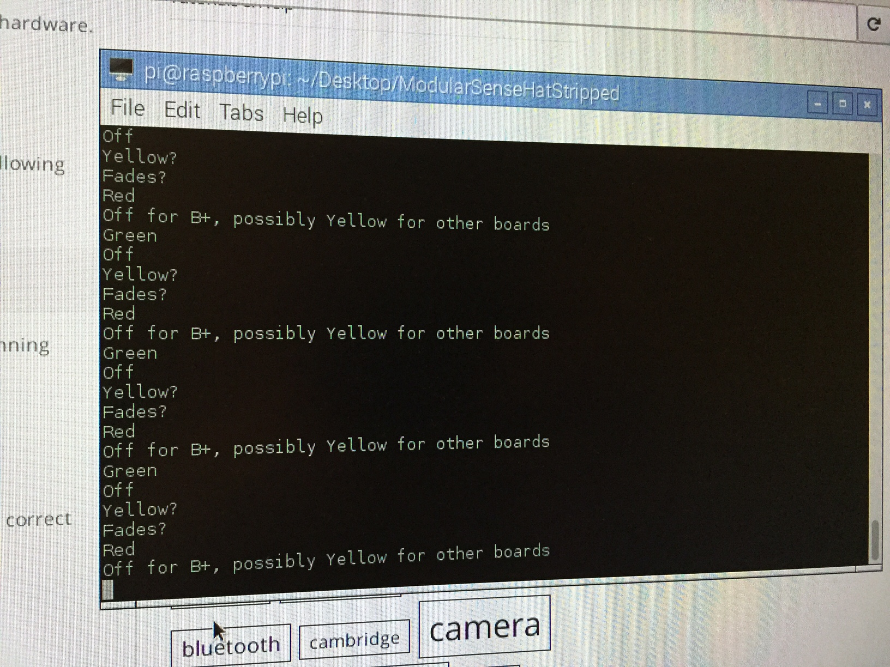
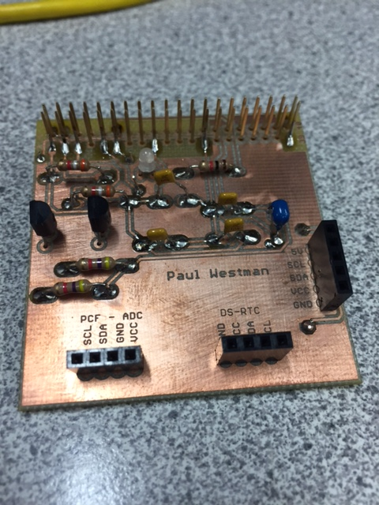
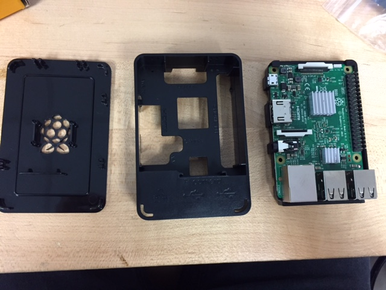
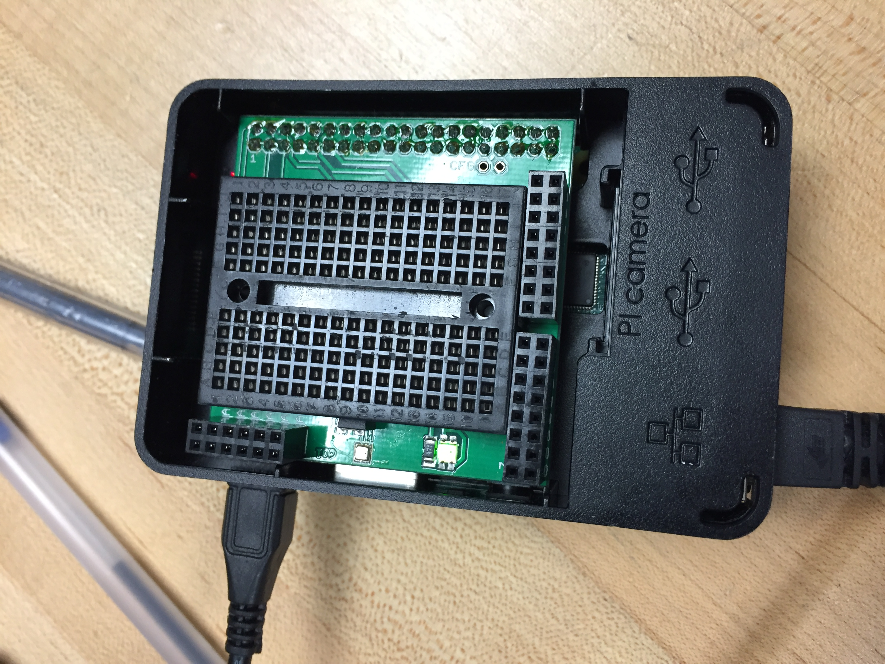
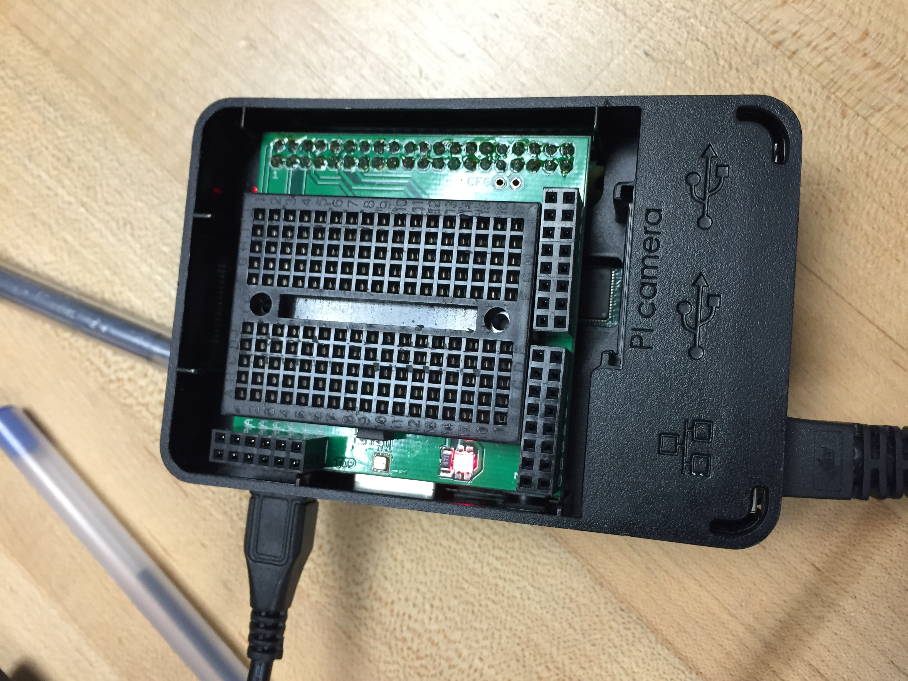

Week 5
Declaration of Joint Authorship, Abstract, and Introduction
Here is a link to the repository where the updated README.md can be viewed.
Week 3
Software Requirements Specification (SRS)
Here is a link to the SRS.
Week 2
Proposal Markdown and PDF
Here is a link to the Proposal PDF.
Week 15
30 Second Script
Here is a link to the 30 Second Script for the final week.
Week 14
Build Instructions
Here is a link to the Build Log that gives detailed instruction should you be insterested in reproducing my project yourself.
I have been discussing with another professor, Jeremy Brooks, about an oportunity to talk with the owner of TERREBLEU, a farm that keeps bees to potentially test out our finished prototype sometime next spring. We will hopefully be coordinating a time in the upcoming weeks where myself and other team members, Roberto Loja and Yurii Sentsiv, can have a phone call to discuss the possibility of this in the new year.
Week 12
Progress Report
Attached below is an individual progress report of my project so far. Next week I will present my fully functioning protoype.
Week 12 Progress Report
Week 11
Progress Report
Attached below is an individual progress report of my project so far.
Week 11 Progress Report
A view of my setup from the open house. The sensors were mounted on either side of the acrylic gate and a counter was displayed to the screen that incremented or decremented every time an object entered or exited respectively.

This is the python code that I used to keep track of the count through the gate at the open house:
#Program Name: counter.py
#Author: Paul Westman
import RPi.GPIO as GPIO
GPIO.setmode(GPIO.BOARD)
GPIO.setup(16,GPIO.IN)
GPIO.setup(18,GPIO.IN)
count=0
run=1
try:
while True:
if GPIO.input(16)==0:
if GPIO.input(18)==0:
if run==1:
count+=1
print count
run=0
elif GPIO.input(18)==0:
if GPIO.input(16)==0:
if run==1:
count-=1
print count
run=0
else:
run=1
finally:
GPIO.cleanup()
Week 10
Progress Report
This week a progess report is due outlining the progress of my project. The file is attached below.
Week 10 Progress Report
Week 7
Power Up Milestone
This week I will be showing a demo of my powered up PCB. The PCB is connected to the GPIO header on my Raspberry Pi. It has an LED light, a temperature sensor, and a light sensor.
i2cdetect -y 1 command showing sensor detection of all three sensors on my PCB:

traffic2B program running in the terminal:

Red light from traffic2B program:

Green light from traffic2B program:

ghmain program running in the terminal:

Week 6
So far I am on track with the activities for the project versus the schedule. I have completed the soldering of the components onto the PCB and I am ready to test to see if the connections are vaild. The current mechanical assembly milestone is complete and ready for the power up milestone next week. Some problems that I encountered was acquiring parts that would not take months to be shipped from overseas or that would not be an additional $50 for shipping to get here sooner. To solve this problem I have found that DigiKey will ship overnight and does not cost a fortune to send. The parts that I will still need to acquire are the IR obstacle avoidance sensor and the IR thermometer for inside the hive. The digital scale was ordered and has arrived. It cost a total of $22.99 plus tax, which came in right at our budget of $25. Financially, the project is on track as almost all components have been acquired and I am still under my projected budget.
This is a picture of the completely soldered PCB. The PCB has yet to be tested and might need some touch ups on the soldering job.
PCB

This is the Raspberry Pi assembled in the case that it was shipped with.
Raspberry Pi in Case


Week 5
This week we purchased most fo the materials for our project. I have uploaded my Individual Progress report below as well as some of the receipts for hardware components that we have ordered. Some of the problems that were encountered this week were the time it takes to ship and receive the components that we are looking for. Many of the items wouldn't arrive until the end of October/ mid way through November. I have tried to look in North America but the challenge is that these items are much more expensive, which makes it difficult to stick to our budget.
Individual Progress Report
Hardware Receipts
Digital Scale
Raspberry Pi
Week 4
This week I submitted the project Budget. It outlines materials that are needed and approximate costs as well as links to where they can be purchased.
Budget
Week 1
Green light

Red light

- Start off by logging into a computer and during the log in process identify ten of the pieces of Tech in the clear project box (this is an individual quiz to be done without communicating with others).
- The clear box represents the maximum size of your project which is in alignment with the space below the tray in your parts kit, you are expected to bring both along with safety glasses every week.
- If your computer has booted:
- Please install https://desktop.github.com/
- Clone https://github.com/six0four/six0four.github.io
- Create an account on GitHub.com
- Create a repository with the name username.github.io with an AGPLV3 license.
- Add the index.html, indexmenu.html, and indexcontent.html from https://github.com/six0four/six0four.github.io to your repository.
- Open username.github.io with a web browser.
- Welcome to your IoT themed hardware projects. Let's get started with some reflective learning.
- Project Proposal template
- 2016 project choices (show placards from previous projects):
- Existing Industry Partner
- 1. Synchronized Fountain Display
- 2. Industry 4.0, OPCUA
- Humber Automation/Mechatronics Program
- 3. PoE Automation cell monitor
- Humber Green House
- 4. FarmBot
- Kortright Centre
- 5. Home Automation https://www.thestar.com/life/homes/2016/06/04/active-house-design-gets-a-real-life-test-drive.html
- 6. Insulation multiplexed grid of sensors
- 7. Remote sensors https://sowc.ca/facilities/data-platform/
- Humber Sustainable Technology Program
- 8. Solar Panel interactive display
- Humber Sustainability/Arboretum
- 9. Langstroth Bee tracker
- Future Humber Quadcopter Swarm
- 10. http://www.bestbuy.ca/en-CA/product/litehawk-litehawk-high-roller-mini-rc-multi-rotor-air-vehicle-red-31406/10361895.aspx
http://dzlsevilgeniuslair.blogspot.ca/2013/11/more-toy-quadcopter-hacking.html
- Humber Engineering Technology Parts Crib
- 11. Parts Crib database
- Humber Public Safety
- 12. Parking Lot combining features seen at Yorkdale and Sherway Gardens
- Humber School of Media Studies
- 13. Voice recognition, akin to Amazon Alexa
- Humber Wireless Program
- 14. Wifi Bridge, reporting up time
- 15. IPenbaled8USB-PsdU for cluster
- Humber HRT
- 16. Health and Wellness: gO2: Oxygen Therapy Rehabilitation Device thesis example
- In the spirit of Entrepreneurpship:
- 17. Propose a project meeting CENG 317 and CENG 319 requirements
- Getting
started with a single board microcomputer, comprised of a 900MHz quad-core ARM Cortex-A7 CPU with 1GB SDRAM, 10/100 Mbit/s
Ethernet, GPIO, UART, I²C bus, SPI bus, and 8 GB of Secure Digital storage from the Humber College Institute of
Technology & Advanced Learning North Campus Technology Parts
Crib
- Electives schedules.

{kind=link}